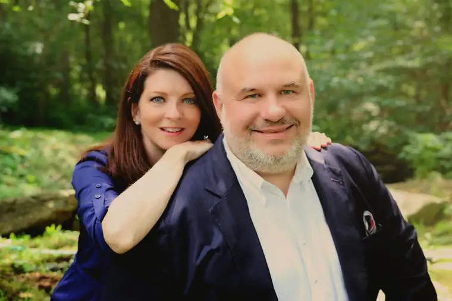

STEUBENVILLE, Ohio — In the third century of the Christian church, in the Roman province of Africa, a theologian named Tertullian wrote of his vision for the people of God.
In “To the Gentiles and Apology,” Tertullian imagined the world observing Christians in action and saying, “Look how they love one another.”
This vision will be shared at this year’s Redeemed conference, hosted by the Diocese of Fargo and open to all, on April 7 at the Scheels Arena in Fargo — particularly by one of its keynote speakers.
“In those earliest days, there was something different about the way Christians treated one another that spoke to the culture,” says Greg Popcak, author and Eternal World Television Network radio-show host. “Our vision of family life is a ministry that communicates God’s love within our families, yes, but also to the world at large.”
His wife, Lisa Popcak, will join him in presenting “See How They Love One Another.”
Popcak understands the reality of what Christian families face in today’s world. As a counselor and founder of the Pastoral Solutions Institute, he works daily helping people find faith-filled solutions to tough marriage, family and personal problems.
“For most people, ‘love’ means, ‘Leave me alone, let me do what I want,’ ” he says. “But to love means to work for the good of another. When we commit to that, good things happen.”
The conference, designed for ages 5 on up, will include a children’s program at Shanley High School, along with a teen-focused event featuring evangelist Nic Davidson, all culminating in a family dance with the local Front Fenders band.
“There’s a real thirst for spiritual sustenance,” says Fargo Diocese Bishop John Folda, adding that people are seeking support for their spiritual lives and their relationship with God, and they are “interested in coming together in a community of faith.”
“We live in a sometimes very isolating culture, in which people are segregated from each other,” Folda says, “so anything we can do to draw people together to join in prayer, worship and conversation — and grow together spiritually — that’s something we want to foster.”
Edward Sri, a theologian, author and father of eight from Colorado, will address how we are all “Called by Name” by God.
Event organizer Jennie Korsmo says Sri will talk in part on the relativism that pervades our culture and how it can interfere with morality.
“He gets to the heart of the matter of why relativism doesn’t work as an overall attitude in society but in a way that is not condemning, ” she says. “He calls us to be better people through love and forgiveness, but we do have to stand up for truth.”
She notes that the Mass at 5 p.m., to be presided over by Folda, is open to the public.
Brad Gray, conference coordinator, says the conference will be “a great opportunity for the people of God to be built up and experience the vibrancy of the church of Fargo.”
“We’re called by Christ’s name, and as Christians, and we’re invited into his victory,” Gray says, noting that the timing of the conference, just after Easter, “the prime celebration of our redemption,” should make it an even more powerful gathering.
While the event will have distinctively Catholic elements, such as recitation of the Divine Mercy Chaplet, an opportunity for sacramental confession and Mass, he says, “this is certainly open to all who would like to attend.”
“The Easter season extends for seven weeks,” Folda adds, “so why not take the Easter joy of the previous Sunday and bring it right along to this event? We’re really celebrating that we are a people redeemed by Christ’s mercy, alive in his risen life, so it all flows together well.”
If You Go
What: Redeemed 2018 conference hosted by the Diocese of Fargo
When: 9:30 a.m. to 9:30 p.m. on Saturday, April 7, with registration at 8 a.m.
Where: Scheels Arena, Fargo, 5225 31st Ave. S., Fargo (The children’s program will be held at Shanley High School, 5600 25th St. S., Fargo.)
Cost: Adults, $35; college students and youth as young as age 5, $15; family maximum, $125. www.fargodiocese.org/redeemed2018.
[For the sake of having a repository for my newspaper columns and articles, I reprint them here, with permission, a week after their run date. The preceding ran in The Forum newspaper on March 24, 2018.]